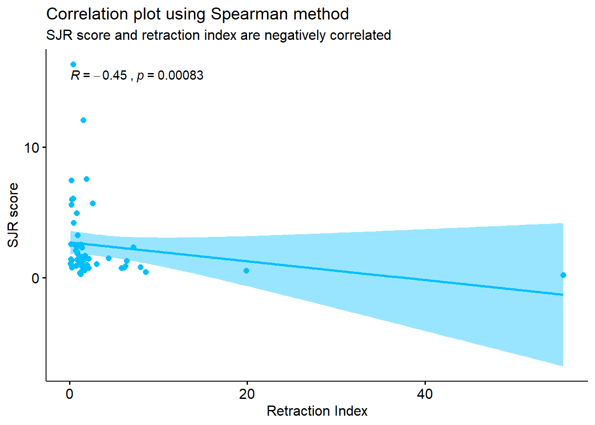
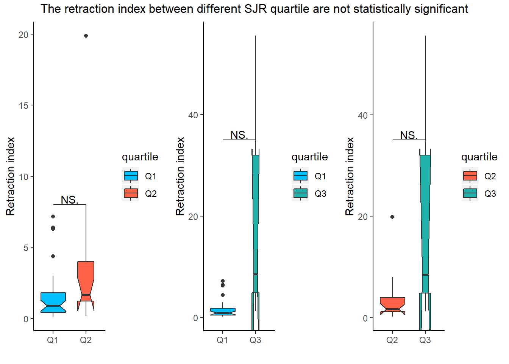

Fang and Casadevall (2011) defined retracted article as an article that is no longer considered trustworthy due to intentional misconduct or unintentional human error. In their study, they found positive correlation between the journal’s retraction index with the Journal Impact Factor (JIF). Steen (2011) also did similar study and concluded that retracted articles are more likely to be published in journals with a high JIF.
In this exploration, I would like to check whether correlation can also be found between retraction index to another journal metric called Scimago Journal Ranking (SJR). The main benefit of using SJR over JIF is that SJR score has been normalized to enable comparison between different subject areas.
Retraction index here is calculated by multiplying the number of retraction notices for each journal during a given time (2009 to 2018) by 1,000, and dividing it by the number of articles published by the journal during the same time period. This definition is adapted from Fang and Casadevall (2011).
PubMed indexes retraction notices and these can be retrieved freely via their API. The dataset used for this exploration was retrieved on October 2019.
SJR score is available publicly at https://www.scimagojr.com/, and for this exploration the 2018 edition is used.
library(tidyverse)
library(tidyverse)
library(highcharter)
library(xml2)
library(XML)
library(purrr)
library(plyr)
library(stringr)
library(ggpubr)
library(ggsignif)The retraction notices (in XML format) are retrieved from PubMed database using the following search term “retraction of publication”[PTYP].
getXML <- function(ptyp) {
require(rentrez)
es <- entrez_search("pubmed", paste(ptyp, "[PTYP]", sep = ""), use_history = TRUE)
ef <- entrez_fetch("pubmed", web_history = es$web_history, retmax = es$count, rettype = "xml")
return(ef)
}
ret_of <- getXML("\"Retraction of Publication\"")
writeLines(ret_of,useBytes = TRUE,"D:/R test/retraction/retractionOf.xml")ret_of <- read_xml("D:/R test/retraction/retractionOf.xml")The following information will be extracted from the XML file:
Journal title
ISSN
Publication year
Subsequently, the number of retraction notices from each journal for the period specified above (2009 to 2018) is calculated.
#journals
journalsToCSV <- function(xmlfile) {
require(rentrez)
require(xml2)
require(dplyr)
require(tibble)
require(readr)
extract_info <- function(x){
title <- x %>% xml_find_first("./ISOAbbreviation") %>% xml_text
issn <- x %>% xml_find_first("./ISSN") %>% xml_text
py <- x %>% xml_find_first("./JournalIssue/PubDate/Year") %>%
xml_text %>% as.numeric()
df <- data.frame(title, issn, py)
return(df)
}
journals_cnt <- read_xml(xmlfile) %>%
xml_find_all("//MedlineCitation/Article/Journal") %>%
extract_info %>%
group_by(title,issn,py) %>%
count(title) %>%
filter(n >= 5 ) %>%
rename(count = n)
return(journals_cnt)
}
ret_journals <- journalsToCSV("D:/R test/retraction/retractionOf.xml")
subset <- ret_journals %>%
filter(py > 2008 | py != 2019)
subset2 <- subset %>%
group_by(title,issn) %>%
summarise(total_count=sum(count))
write.csv(subset2, "D:/R test/retraction/subset.csv")The following code will search for the total number of publications published by the above journals from the same time period, 2009 to 2018.
subset2 <- read.csv("D:/R test/retraction/subset.csv")
tot_journals <- tibble()
for(j in 1:length(subset$title))
{
for(y in 2009:2018) {
journal <- paste("\"", subset$title[j],"\"","[JOUR]", sep = "")
year <- paste(y,"[EDAT]", sep = "")
total <- entrez_search("pubmed", paste(journal, "AND ", year, sep = " "))
Sys.sleep(3)
x <- data.frame("title" =as.character(subset$title[j]),
"issn" = as.character(subset$issn[j]),
"year" = y,
"total" = as.numeric(subset$count))
tot_journals <- bind_rows(tot_journals,x)
}
}
write.csv(tot_journals,"D:/R test/retraction/total_journal.csv" )
tot_journals2 <- tot_journals %>%
dplyr::group_by(issn) %>%
dplyr::summarize(total_pub=sum(total))
dat <- left_join(subset2, tot_journals2, by="issn")
write.csv(dat,"D:/R test/retraction/subset_retract_of.csv" )Subsequently, the retraction index can be calculated.
dat <- read.csv("D:/R test/retraction/subset_retract_of.csv")
dat <- dat %>%
mutate(rate = round(((1000 * total_count)/total_pub), 3)) %>%
arrange(desc(rate))The SJR metrics downloaded from https://www.scimagojr.com/ requires some wrangling.
sjr <- read.csv("D:/R test/retraction/sjr.csv") %>%
filter(Type == "journal") %>%
select(c(Title,Issn,SJR.Best.Quartile, SJR))
sjr_edit <- sjr %>%
separate(Issn, c("issn1","issn2"), sep = "\\,", remove = TRUE) %>%
mutate(issn1 = str_pad(issn1, 8, side = c("left"), pad = "0"),
issn2 = str_pad(issn2, 8, side = c("left"), pad = "0")) %>%
mutate(issn2 = str_trim(issn2, side = c("left"))) %>%
mutate(issn1 = sub("(.{4})(.*)", "\\1-\\2", issn1),
issn2 = sub("(.{4})(.*)", "\\1-\\2", issn2))#match the data using title
combined <- left_join(dat, sjr_edit, by = c("issn" = "issn1"))
combined2 <- left_join(combined, sjr_edit, by = c("issn" = "issn2"))
combined3 <- combined2 %>%
mutate(quartile = coalesce(SJR.Best.Quartile.x,SJR.Best.Quartile.y),
sjr=coalesce(SJR.x,SJR.y)) %>%
select(title,issn,total_count,total_pub,rate,quartile,sjr) %>%
mutate(sjr=gsub("\\,","\\.",sjr))%>%
mutate(sjr=as.double(sjr))
#remove duplicate due to eissn and pissn
combined4 <- combined3[!duplicated(combined3$title), ] %>% drop_na()dat1 <- dat %>% top_n(20, wt = rate)
highchart() %>%
hc_add_series(dat1, "bar", hcaes(x = title, y = rate)) %>%
hc_title(text = "Journals with the highest retraction index") %>%
hc_legend(enabled = FALSE) %>%
hc_yAxis(title = list(text = "retraction index")) %>%
hc_xAxis(categories = dat$title,
labels = list(formatter = JS("function() { return '<a href=\"http://www.pubmed.gov/?term=%22retraction%20of%20publication%22[PTYP] AND %22' + escape(this.value) + '%22[JOUR]\" target=\"_blank\">' + this.value + '</a>'; }"),
useHTML = "true",
style = list(fontSize = "10px"))) %>%
hc_tooltip(pointFormat = "{point.y} retraction index") %>%
hc_plotOptions(series = list(color = "#FFA500"))In this exploration, the relationship between SJR score and retraction index can be concluded as significantly correlated (p < 0.05), with correlation coefficient of -0.45.
# visualize the correlation plot
ggscatter(combined4, x = "rate", y = "sjr",
add = "reg.line", conf.int = TRUE, color = "deepskyblue",
title = "Correlation plot using Spearman method",
subtitle = "SJR score and retraction index are negatively correlated",
ylab = "SJR score", xlab = "Retraction Index") +
stat_cor(method = "spearman")
res <- cor.test(combined4$rate, combined4$sjr,
method = "spearman")
res##
## Spearman's rank correlation rho
##
## data: combined4$rate and combined4$sjr
## S = 35852, p-value = 0.0008317
## alternative hypothesis: true rho is not equal to 0
## sample estimates:
## rho
## -0.4453986Based on the plot below, the median values of journal’s retraction index between different SJR quartile are not statistically significant. With inconclusive findings between the influence of SJR score and quartile with journal’s retraction index, more studies should be conducted to further analyze their relationship.
q1_q2 <- combined4 %>%
filter(quartile == "Q1" | quartile == "Q2")
q1_q3 <- combined4 %>%
filter(quartile == "Q1" | quartile == "Q3")
q2_q3 <- combined4 %>%
filter(quartile == "Q2" | quartile == "Q3")
a <- q1_q2 %>%
ggplot(aes(x=quartile, y=rate, fill=quartile)) +
geom_boxplot(varwidth=T, notch=T)+
geom_signif(comparisons=list(c("Q1", "Q2")),map_signif_level = TRUE,
test = "pairwise.wilcox.test",
y_position = 8, tip_length = 0, vjust=0.2)+
labs(x= "",
y= "Retraction index")+
scale_fill_manual(values = c("Q1" = "deepskyblue","Q2" = "tomato")) +
theme(panel.grid.major = element_blank(), panel.grid.minor = element_blank(),
panel.background = element_blank(), axis.line = element_line(colour = "black"))
b <- q1_q3 %>%
ggplot(aes(x=quartile, y=rate, fill=quartile)) +
geom_boxplot(varwidth=T, notch=T)+
geom_signif(comparisons=list(c("Q1", "Q3")),map_signif_level = TRUE,
test = "pairwise.wilcox.test",
y_position = 35, tip_length = 0, vjust=0.2)+
labs(x= "",
y= "Retraction index")+
scale_fill_manual(values = c("Q1" = "deepskyblue", "Q3" = "lightseagreen")) +
theme(panel.grid.major = element_blank(), panel.grid.minor = element_blank(),
panel.background = element_blank(), axis.line = element_line(colour = "black"))
c <- q2_q3 %>%
ggplot(aes(x=quartile, y=rate, fill=quartile)) +
geom_boxplot(varwidth=T, notch=T)+
geom_signif(comparisons=list(c("Q2", "Q3")),map_signif_level = TRUE,
test = "pairwise.wilcox.test",
y_position = 35, tip_length = 0, vjust=0.2)+
labs(x= "",
y= "Retraction index")+
scale_fill_manual(values = c("Q2" = "tomato", "Q3" = "lightseagreen")) +
theme(panel.grid.major = element_blank(), panel.grid.minor = element_blank(),
panel.background = element_blank(), axis.line = element_line(colour = "black"))
gridExtra::grid.arrange(a, b ,c , ncol = 3,
top = "The retraction index between different SJR quartile are not statistically significant")
Fang, F. C. & Casadevall, A. (2011). Retracted Science and the Retraction Index. Infection and Immunity, 79(10), 3855-3859. doi: 10.1128/IAI.05661-11
Saunders, N. (n.d.). PubMed retractions. Retrieved from https://github.com/neilfws/PubMed/tree/master/retractions/code/R
Steen, R. G. (2011). Retractions in the scientific literature: do authors deliberately commit research fraud? Journal of Medical Ethics, 37(2), 113-117. doi: 10.1136/jme.2010.038125